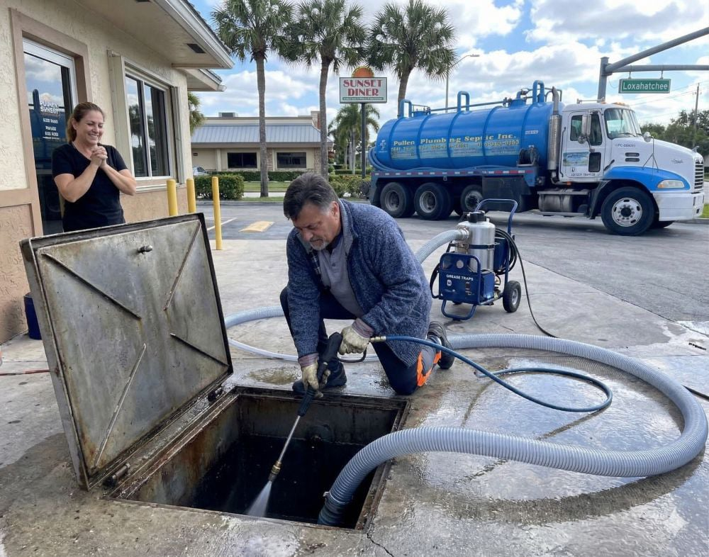

Septic Tank Pumping
Professional pumping helps remove accumulated solids and supports proper septic system operation.
Explore Service
From routine pumping and inspections to repairs, cleaning, and emergency support, ClearFlow provides dependable septic solutions for your property.
Your septic system needs the right care at the right time. ClearFlow provides essential services designed to help homeowners maintain, understand, and protect their septic systems.
Professional pumping helps remove accumulated solids and supports proper septic system operation.
Explore Service
Detailed inspections help identify system conditions and potential areas requiring attention.
Explore ServiceProfessional repair support helps address septic problems and restore dependable system operation.
Explore Service
Preventive maintenance helps you stay ahead of system concerns and support long-term performance.
Explore ServiceResponsive support for unexpected septic problems that require professional attention.
Explore Service
Professional cleaning helps remove accumulated material and support proper system function.
Explore Service
Septic service should be clear and easy to understand. We focus on identifying the need, explaining the work, and providing practical service for your property.
Understand the condition of your system and identify the service required.
Give you clear information about the work and practical next steps.
Complete the required work with care and attention to your property.
Pumping frequency depends on factors such as tank size, household size, wastewater volume, and system use. A professional assessment can help determine an appropriate schedule for your property.
An inspection generally focuses on the condition and operation of accessible components of the septic system and can help identify potential maintenance or service needs.
Unusual odors, slow drainage, wet areas, backups, or other changes in system behavior may indicate that professional attention is needed.
ClearFlow provides emergency service support for unexpected septic concerns. Contact the team to discuss your situation and determine the next step.

Whether you need pumping, inspection, repair, maintenance, emergency service, or system cleaning, we're ready to help.